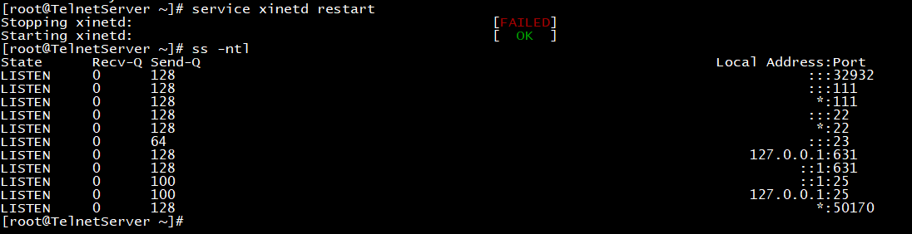

一、SSH端口转发相关概念
在上一节我们知道，SSH会自动加密和解密所有SSH客户端和服务器之间的网络数据。但是，SSH还同时
提供了一个非常有用的功能，这就是端口转发。它能够将其他TCP端口的网络数据通过安全的SSH协议
转发，例如：Telnet，SMTP等这些TCP应用都能从中受益，避免了用户名，密码以及隐私信息的明文传
输。而与此同时，如果在你的工作环境中防火墙限制了一些网络端口的使用，但是允许SSH的连接，那么
端口转发功能也能够将TCP端口转发来使用SSH进行通信。
SSH端口转发提供的功能主要有：
1.加密SSH Client端至SSH Server端之间的数据
2.突破防火墙的限制完成一些之前无法建立的TCP连接
SSH端口转发提供的类型有：
本地转发
远程转发
动态转发
X协议转发
本地转发：
当外网用户想要临时访问公司内部的不安全TCP协议服务器时，由于防火墙限制无法直接访问，但可利用
先SSH连接至公司内网的SSH服务器在转发至不安全的TCP协议服务器。由于作为转发的SSH服务器与要访
问的不安全TCP协议服务器在同一网络环境内，故这种连接就叫本地转发。
格式：
ssh -L localprot:remotehost:remotehostport sshserver
localprot：指定本机端口
remotehost：指定远程不安全协议的服务器地址
remotehostport：远程不安全协议的服务器地址端口
sshserver：SSH服务器地址
options：
-f 后台启用
-N 不打开远程shell，处于等待状态
-g 启用网关功能
示例：
ssh -L 9527:telnetsrv:23 -N sshsrv
telnet 127.0.0.1 9527
当访问本机的9527端口时，被加密后转发到sshsrv的ssh服务，再解密被转发到telnetsrv:23
大致流程：
Data <–> localhost:9527 <–>localhost:xxxxx <–> sshsrv:22 <–>sshsrv:yyyyy <–> telnetsrv:23
远程转发：
与本地端口转发相比，我们将SSH服务器与Client访问端的位置对调，将与不安全TCP协议服务器同一内网
的主机作为Client，将外部网络主机作为SSH服务器做为端口转发。由于作为转发的SSH服务器处在外部网
络环境中，故这种连接就叫远程转发。
格式：
ssh -R sshserverport:remotehost:remotehostport sshserver
sshserverport：指定SSH服务器端口
remotehost：指定远程不安全协议的服务器地址
remotehost:remotehostport：指定远程不安全协议的服务器端口
sshserver：SSH服务器地址
示例：
ssh -R 9527:telnetsrv:23 -N sshsrv
让sshsrv侦听9527端口的访问，如有访问，就加密后通过ssh服务转发请求到本机ssh客户端，再由本机解密后转发到telnetsrv:23
大致流程：
Data <–> sshsrv:9527 <–> sshsrv:22 <–> localhost:xxxxx <–> localhost:yyyyy <–> telnetsrv:23
动态端口转发：
在之前我们已经了解了本地转发，以及远程转发，但它们实现的前提都是要求有一个固定的应用服务端端
口号。但在某些场景下，例如用浏览器浏览网页，是没有固定端口的，这时就需要利用到动态的端口转
发。比如说，当用firefox访问Internet时，本机的1080端口作为代理服务器，firefox的访问请求被转发到
sshserver上，由sshserver替代访问Internet
ssh -D 1080 root@sshserver
在本机firefox设置socketproxy:127.0.0.1:1080
curl –socks5 127.0.0.1:1080 http://www.qq.com
X协议转发：
所有图形化应用程序都是X客户程序
能够通过tcp/ip连接远程X服务器
数据没有加密机，但是它通过ssh连接隧道安全进行
ssh -X user@remotehost gedit
remotehost主机上的gedit工具，将会显示在本机的X服务器上
传输的数据将通过ssh连接加密
相关文件：
/var/log/secure 存放日志
/etc/ssh/sshd_config SSH服务配置文件
#Port 22 端口
生产中一般第一步先改端口号
如Port 9527
定义公钥、私钥存放文件名，位置
HostKey /etc/ssh/ssh_host_rsa_key
#HostKey /etc/ssh/ssh_host_dsa_key
HostKey /etc/ssh/ssh_host_ecdsa_key
HostKey /etc/ssh/ssh_host_ed25519_key
日志设置选项，日志存放在/var/log/secure
# Logging
#SyslogFacility AUTH
SyslogFacility AUTHPRIV
#LogLevel INFO
#LoginGraceTime 2m 不输入密码最大时间端口
#PermitRootLogin yes 生产中一般改成no，普通用户连接su切换
#StrictModes yes 检查文件权限
#MaxAuthTries 6 密码登录最大验证次数
#MaxSessions 10 单个会话能开的最大克隆数
PasswordAuthentication yes 是否允许基于口令登录方式，no表示禁止
#ClientAliveInterval 0 连接后不操作最大时间，单位：秒
#ClientAliveCountMax 3 连接环不操作最大时间次数
生产中一般要修改AliveInterval 30
AliveCountMax 3
表示连接后不进行任何操作30S，3次后自动断开连接
#ShowPatchLevel no
UseDNS no 是否使用DNS反向解析，关闭可提高连接速度
#MaxStartups 10:30:100 最大并发连接数，默认10
限制可登录用户的办法：
AllowUsers user1 user2 user3
DenyUsers
AllowGroups
DenyGroups
SSH服务的最佳实践配置：
建议使用非默认端口
禁止使用protocol version 1
限制可登录用户
设定空闲会话超时时长
利用防火墙设置ssh访问策略
仅监听特定的IP地址
基于口令认证时，使用强密码策略
tr -dc A-Za-z0-9_ < /dev/urandom | head -c 30| xargs
使用基于密钥的认证
禁止使用空密码
禁止root用户直接登录
限制ssh的访问频度和并发在线数
经常分析日志
二、实验：模拟SSH本地端口转发
应用场景：当外部客户端想要访问公司内网的Telnet服务器时，由于防火墙限制无法直接访问，可使用
SSH本地端口转发实现：
前期准备：
以三台CentOS模拟机作为服务器及主机，主机名网络配置如下：
客户端：192.168.30.133
SSH服务器：192.168.30.158
telnet服务器：192.168.30.160
telnet服务器端操作：
一、安装telnet-server包，系统默认未安装
二、防火墙禁止远程客户端访问：
iptables -A INPUT -s 192.168.30.133 -j REJECT
为了防止之前防火墙策略干扰，最好先清空下防火墙策略：
iptables -K
此时作为Clinet的192.168.30.133已经ping不通作为telnet服务器的192.168.30.160
三、开启telnet-server服务
CentOS6：
service xinted start 开启xinted进程
chkconfig telnet on 开启telnet服务
service xinted restart 重启xinted服务

CentOS7：
systemctl start telnet-scoket
客户端操作：
ssh -L 9527:192.168.30.17:23 [-Nf] 192.168.30.6
加-Nf选项将后台执行，关闭时只能通过kill关闭进程
telnet 127.0.0.1 9527
提示输入用户名，密码；默认不让root账户使用SSH端口转发登录
三、实验：模拟SSH远程端口转发
应用场景：当外部有工程师想要临时访问内部telnet服务器时，作为系统管理员，我们可以将对方主机作
为SSH服务器进行端口转发，让其临时可访问公司的telnet服务器。
前期准备：
以三台CentOS模拟机作为服务器及主机，主机名及网络配置如下：
Internet：192.168.30.133
lanserver：192.168.30.158
telnet服务器：192.168.30.160
lanserver端操作：
ssh -R 9527:192.168.30.17:23 [-Nf] 192.168.30.7
加-Nf选项将后台执行，关闭时只能通过kill关闭进程
Internet端操作：
telnet 127.0.0.1 9527
四、实验：模拟SSH动态端口转发
应用场景：在某些场景中，用浏览器浏览网页，是没有固定端口的，这时就需要利用到动态的端口转
发。下面我们模拟用一台虚拟机模拟google网站，用Internet主机通过代理服务器proxy访问google模拟机
前期准备：
以三台CentOS模拟机作为服务器及主机，主机名及网络配置如下：
Internet：192.168.30.133
proxy：192.168.30.158
google：192.168.30.160
google模拟服务器操作：
开启http服务，模拟网页内容：
CentOS6：
service httpd start
CentOS7：
systemctl start httpd
echo www.google.com > /var/www/html/index.html
此时访问192.168.30.160，正常网页内容显示如下:
Internet端操作：
此时在Internet端我们是无法访问google服务器的
使用proxy的1080端口作为动态转发：
ssh -D 1080 root@192.168.30.158
接下来我们可以通过图形界面或者字符界面来尝试访问：
图形界面：
打开firefox浏览器，按以下顺序操作：
–>preferences–>advanced–>network–setting–manual proxy configuration
–>SOCKS Host:127.0.0.1
现在再次尝试访问192.168.30.160的google模拟服务器，发现可以正常访问了！
字符界面：
在字符界面我们可执行下面的命令来进行访问：
curl -socks5 127.0.0.1:1080 192.168.30.17